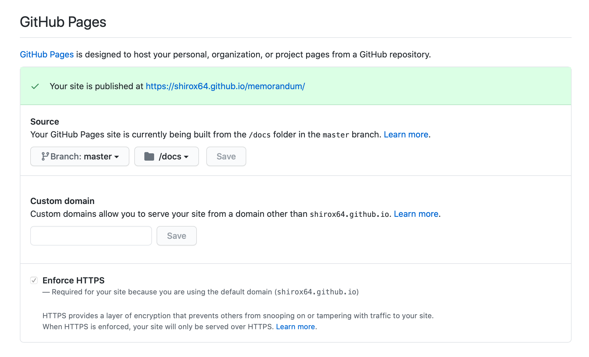

Sphinx入門¶
Sphinxとは¶
Sphinxとは公式サイトによると知的で美しいドキュメントを簡単に作れるようにするツールらしいです。
Sphinxの使い方¶
プロジェクトの作成¶
プロジェクトは下記のコマンドで作成できます。
sphinx-quickstart
プロジェクト作成のコマンドを実行すると下記のようにいくつか質問されるので適当に入力します。
Sphinx 3.1.2 クイックスタートユーティリティへようこそ。
以下の設定値を入力してください（Enter キーのみ押した場合、
かっこで囲まれた値をデフォルト値として受け入れます）。
選択されたルートパス: .
Sphinx 出力用のビルドディレクトリを配置する方法は2つあります。
ルートパス内にある "_build" ディレクトリを使うか、
ルートパス内に "source" と "build" ディレクトリを分ける方法です。
> ソースディレクトリとビルドディレクトリを分ける（y / n） [n]: y
プロジェクト名は、ビルドされたドキュメントのいくつかの場所にあります。
> プロジェクト名: memorandum
> 著者名（複数可）: shirox64
> プロジェクトのリリース []: 1.0.0
ドキュメントを英語以外の言語で書く場合は、
言語コードで言語を選択できます。Sphinx は生成したテキストをその言語に翻訳します。
サポートされているコードのリストについては、
https://www.sphinx-doc.org/en/master/usage/configuration.html#confval-language を参照してください。
> プロジェクトの言語 [en]: ja
プロジェクトは下記のような構造で作成されます。
.
├── Makefile
├── build
├── make.bat
└── source
├── _static
├── _templates
├── conf.py
└── index.rst
自動ビルド¶
編集する度にビルドして確認するのは効率が悪いのでsphinx-autobuildを利用します。 sphinx-autobuildのインストールコマンドは下記になります。
pip install sphinx-autobuild
下記のコマンドで自動的にビルトとブラウザの再リロードをしてくれるようになります。
sphinx-autobuild -b html source build/html
コマンド実行後、http://127.0.0.1:8000 にアクセスするとビルドした結果を確認できます。
Sphinxの書き方¶
後日更新予定
GitHub Pagesで公開¶
GitHubでGitHub Pagesの設定¶
GitHub Pagesの設定は対象のリポジトリのページのSettingsタブを選択して少し下にスクロールするとあります。 公開するソースのディレクトリはリポジトリ直下もしくはリポジトリ直下のdocsを選択できるみたいです。
.nojekyllファイルの作成¶
GitHib PagesはJekyIIが使われており、_staticなどにあるファイルを読み取ることができないのでsphinxのcssが適用されません。 そこでリポジトリの直下に.nojekyllというから空ファイルを配置する必要があります。
Sphinxのビルド¶
make htmlだとbuildディレクトにファイルが生成されるのでdocsディレクトリに生成されるように下記のコマンドを実行します。
sphinx-build -b html source docs/
ソースの公開¶
ビルドが完了すれば、後はプッシュするだけです。